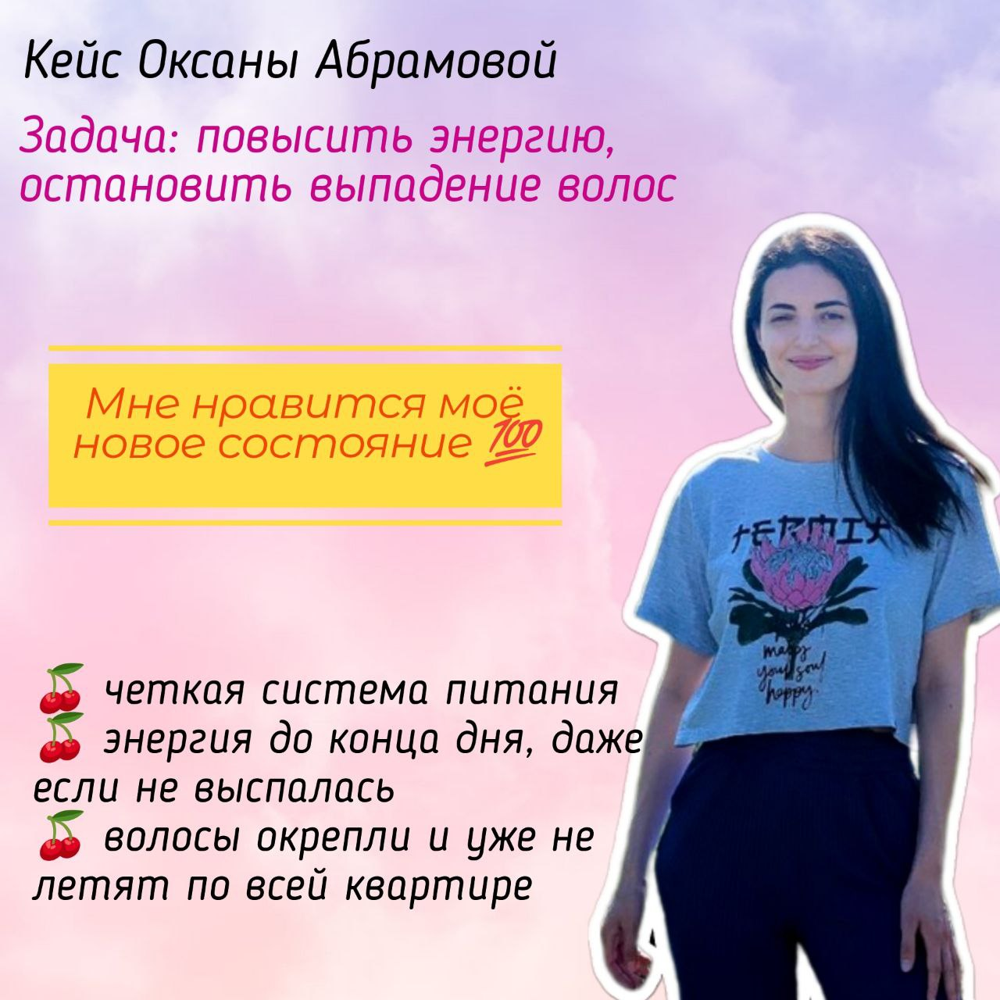
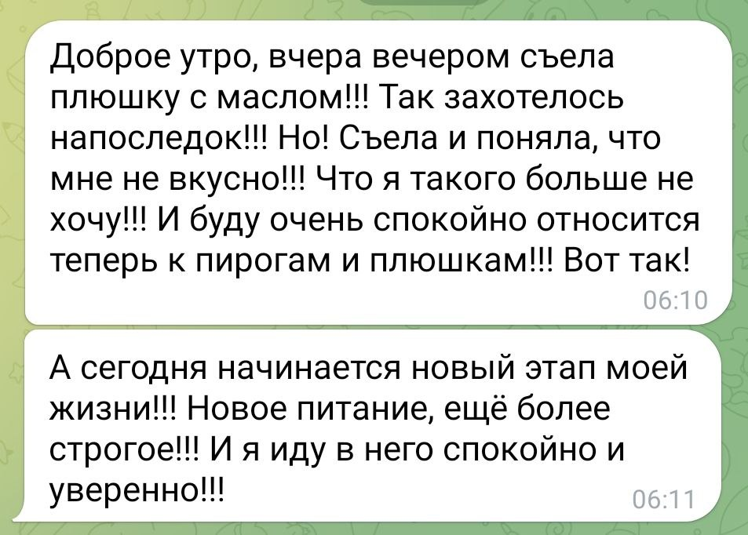
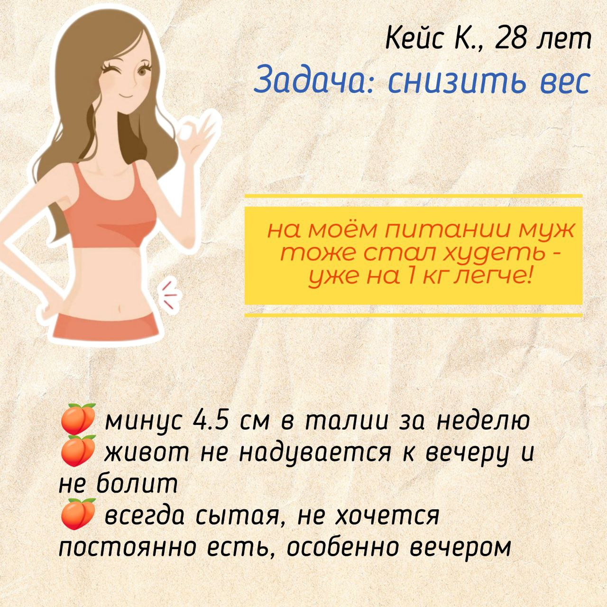
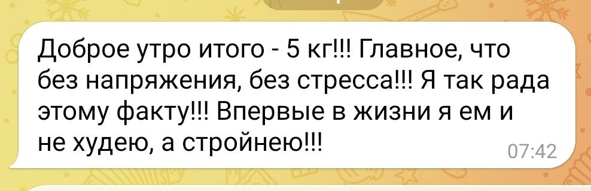
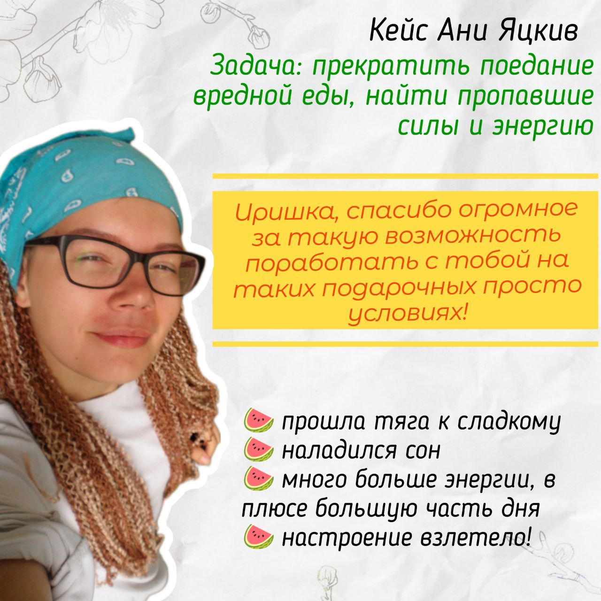
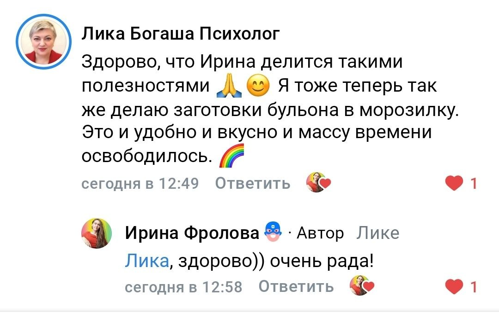
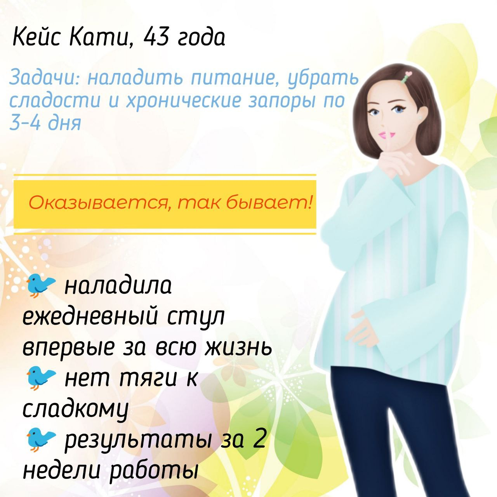

✨ Вашу личную систему питания и восстановления, которая работает в гостях, в командировке и даже в стрессовые дни.
Вы не запрещаете себе ничего, но остаётесь в комфортном весе и самочувствии. Просто живёте свою жизнь, в которую естественно встроены здоровые привычки, без зацикливания на ЗОЖ.
Наводим порядок в базовых вещах. Учимся простым ритуалам, которые успокаивают нервную систему, налаживают сон, питьевой режим. Без заморочек.
Учимся собирать сбалансированный приём пищи за 5 минут. Без взвешиваний и сложных расчётов. Просто, понятно, вкусно. Параллельно разбираемся с кишечником: почему возникает вздутие, как кормить хорошие бактерии, как готовить так, чтобы ваша любимая еда приносила пользу и радость.
Учимся выбирать продукты в магазине, читать этикетки за 1 взгляд, отличать полезное от мусора. Составляем меню из доступных продуктов, учимся делать полезные замены ингредиентов, чтобы спокойно готовить для всей семьи. Выбираем полезные десерты и убираем пищевой мусор из дома.
Готовим 2 раза в месяц, экономя время и деньги и сохраняя тарелку и пользу.
Какие добавки реально нужны, схемы приёма без страха и переплат. Собираем свой список базовых БАД.
Собираем сбалансированную тарелку в любых условиях (гости, ресторан, отель, самолёт), поддерживаем себя в авральной ситуации (пустой холодильник, цейтнот), а после возвращаемся к своей системе за 2–3 дня, не теряя результатов. Составляем готовый личный план, чтобы поддерживать здоровье самостоятельно и гибко адаптироваться к любым обстоятельствам.

«Утром встаю, и у меня благодаря работе, которую мы сделали, нет желания налить просто кружку чая… По поводу вкусняшек – как их в жизнь вплетать, я уже поняла. И сейчас не так много их хочется, а во-вторых, по самочувствию чувствую разницу.»


«Эти маленькие шаги, которые мы делаем, потихонечку ведут к результату. У меня нормализуется цикл. Я начинаю контролировать себя во вторую фазу, стараюсь не вспылить. Я считаю, что при таком раскладе буду идти только вверх, к лучшему самочувствию. Уже многое намотала на ус, и может быть что-то ещё не делаю, но понимаю – делаю это осознанно. Поддаюсь соблазну, говорю – да, сейчас съем, потому что хочу себя побаловать, но это уже не привычка, как раньше.»


«Раньше я заказывала любимый лимонный тарт и ела его перед ужином в 4 часа с чаем. Сейчас я понимаю и ем более осознанно, выбираю белковые варианты, понимаю, зачем это нужно. Я понимаю, что нужно работать со стрессом. Эти осознания очень дорогого стоят. Запретов нет – это очень хорошо, потому что мозг сразу саботирует запреты. Будем продолжать работать и докручивать до индивидуальной нормы для меня»


3 недели – шаги 1–3
7 недель – все 6 шагов
Полный курс + личная поддержка (только 3 места)
📌 Доступ к материалам и общему чату на всех тарифах – 3 месяца. Результат остаётся с вами навсегда.
Сначала нервная система, вода и сон → потом питание и кишечник → затем БАДы и адаптация. Каждый шаг создаёт условие для следующего. Результат неизбежен для тех, кто четко идет по программе.
Более 5 лет практики, 50+ кейсов (в том числе стенозы, СПКЯ, аутоиммунные).
Вы наладите сон, водный баланс, научитесь собирать тарелку, понимать кишечник и читать этикетки. Первые устойчивые результаты – энергия, лёгкость, спокойствие в еде.
Заготовки, БАДы, стратегии на праздники и отпуск. Вы станете автономны и гибки – сможете возвращаться в строй после любого сбоя без чувства вины.
Никаких жёстких диет и запретов. Только гибкие инструменты, которые встраиваются в ваш ритм жизни.
✅ Проверенные материалы – рецепты, чек-листы, списки покупок, схемы заготовок, которые экономят время и деньги.
Полный курс + VIP-чат с ежедневной поддержкой + 6 индивидуальных разборов (по каждому модулю). Это для тех, кто хочет докрутить результат до идеала и получить личное ведение по цене группы.